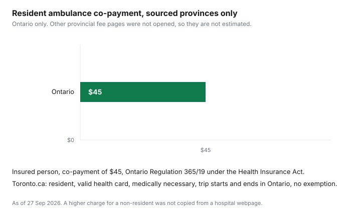

Healthcare · Canada
What an Ambulance Ride Costs in Canada: Provincial Fees and When You'll Get a Bill
An ambulance bill arrives later, often from the hospital, and it is not the same number in every province. This page prints a resident fee only where an official page states one. That is Ontario's $45 co-payment. British Columbia, Alberta, and the other provinces are omitted rather than filled from a secondary article. The surprise for a visitor is better documented than a full national price list: reciprocal hospital billing generally does not pick up the ambulance. What you still pay in cash for care a plan did not cover is the uninsured fees guide. This is education, not a quote for a ride you have not taken.
Key takeaways
- Ontario Regulation 365/19 sets a $45 co-payment for an insured person. Toronto's fees page adds the conditions: resident, valid health card, medically necessary, trip starts and ends in Ontario, and no exemption.
- Other provincial resident fees are not covered here; check your province’s official fee page. They are not estimated.
- Alberta's reciprocal-claims guide says out-of-province ambulance is outside the hospital reciprocal arrangement. B.C. says it does not subsidize ambulance services outside the province.
- The $45 co-payment does not apply to a person listed in subsection 15(6). That list was not copied from a hospital site.
- A workplace plan may pay the fee. No booklet is listed here, so no coverage percent is stated. An unreimbursed ambulance to a public or licensed private hospital can be a medical expense under the folio.
Why ambulance fees vary so much by province
Hospital services that provinces insure for each other's residents are not the same list as ambulance services. Alberta's Hospital Reciprocal Claims Guide, in the version dated July 2024, says air and road ambulance provided to out-of-province residents are not considered insured health care services by most provincial and territorial plans, and are not covered under the reciprocal billing arrangement.
It tells residents to ask their own ministry about out-of-province ambulance before they leave. That is a structural reason a visitor's bill looks nothing like a resident's co-payment. It is not a table of what each province charges its own residents.
Inside a province, the fee is whatever that province's statute or fee schedule says, plus the exemptions that schedule lists. Ontario's rule is a co-payment on an otherwise insured service. Another province can charge a larger user fee, waive residents entirely, or bill by distance. Because those schedules are not covered, this article does not rank provinces and does not say Ontario is the cheapest. A number that was not on an official page is not a comparison.
Province-by-province fee table (sourced provinces only)
Ontario Regulation 365/19, filed under the Health Insurance Act, says ambulance services provided in accordance with the patient-care standards it cites are insured services if two things are true. The services are provided to an insured person by an operator that holds a certificate under the Ambulance Act. The insured person pays a co-payment of $45 to a hospital, as defined in the Public Hospitals Act, that is an associated hospital for those services. The regulation says that co-payment does not apply to a person listed in subsection 15(6) of Regulation 552.
The City of Toronto page "Ambulance Fees" says the Ministry of Health and Long-Term Care sets, bills, and collects the fees, and that you are responsible for a co-payment of $45 when you are an Ontario resident, you have a valid Ontario health card, a physician deems the service medically necessary, the trip originates and ends in Ontario, and you cannot claim an exemption. The regulation and the Toronto page are the sources for the $45. Hospital webpages that also print a larger amount for a non-resident or a trip judged unnecessary are not used. That larger amount is omitted.
| Province | Resident fee (official page) | Who is exempt | Source |
|---|---|---|---|
| Ontario | $45 co-payment for an insured person. | The co-payment does not apply to a person listed in subsection 15(6) of Regulation 552. The current names in that subsection are not listed here. Toronto's page treats the absence of an exemption as a condition of the $45. | O. Reg. 365/19. City of Toronto, Ambulance Fees. As of 27 Sep 2026. |

When you'll get a bill: non-residents, uninsured and non-essential transfers
Toronto's conditions are also a map of when the $45 may not be the number on the invoice. If you are not an Ontario resident, you do not have a valid health card, a physician does not deem the trip medically necessary, or the trip does not start and end in Ontario, the Toronto page is not promising $45. The regulation text does not say what replaces it. Ask the hospital what authority it used, and keep the invoice.
If you are visiting, plan on paying. Alberta's reciprocal guide says Canadians travelling out of province are responsible for ambulance costs, within and to or from other provinces and territories. British Columbia's page on medical benefits outside B.C. says provincial assistance is not provided to subsidize ambulance services outside B.C., and that if you need an ambulance in another province or outside Canada you will be charged the full cost, which will not be reimbursed by the Ministry of Health. The same B.C. page says fees can range from several hundred to several thousand dollars. That is a range, not a fee schedule, so it is not turned into a bar on the chart. The insurance product written for care outside your home province is the out-of-province travel insurance guide. Read it before you rely on a health card in another province.
Exemptions and reduced fees: low income, seniors, social assistance
Ontario's regulation does not, in the section cited, print a senior discount or a low-income dollar test. It points at subsection 15(6) for the people who do not pay the co-payment.
A consolidated current copy of that subsection is not quoted here. Hospital and county pages list groups such as social assistance and certain facility residents. Those lists are not copied here, because they are not the regulation. If you receive Ontario Works or ODSP, or you live in a facility you believe is exempt, ask the biller which subsection they are applying and send the card or letter they ask for. Do not assume age alone removes the $45. No source cited here says that it does.
Reduced fees in other provinces are in the same position as the resident fees. They are not described here. A province that waives a fee for social-assistance recipients still has to be read on that province's page.
What workplace benefits and travel insurance cover
A workplace health plan sometimes reimburses an ambulance co-payment or a user fee. Sometimes the line is capped, sometimes it requires the trip to have been to a hospital, and sometimes air ambulance is a different line from ground.
None of those clauses is stated as typical, because this guide does not quote a booklet for them. Pull the benefits booklet and search for ambulance. If you have no workplace plan, a private policy is an offer type discussed on the gap-coverage guide. This page does not name an insurer.
Travel medical insurance is the other place the fee shows up, especially for a ride outside your home province. The certificate, not a general article, says whether ground ambulance, air ambulance, or both are included, and whether a pre-existing condition changes that. Start with the out-of-province guide. Do not assume a credit-card policy you have not read will pay a bill the province has already said is yours.
If you pay and nobody reimburses you, the tax folio is separate from the plan. Paragraph 1.64 of Income Tax Folio S1-F1-C1 says an amount paid to transport a patient by ambulance to or from a public or licensed private hospital is an eligible medical expense. It still has to clear the threshold on the return. That arithmetic is the medical expense tax credit guide. Claim the unreimbursed part only.
If you get a bill: reviewing it and asking for an exemption
Read the invoice for four things before you pay or dispute it. Who issued it, which is often the hospital rather than the paramedic service.
Whether it says you are an Ontario resident with a health-card number. Whether it states the trip was medically necessary. The amount. Match those lines to the Toronto conditions and to the $45 in the regulation. If the amount is not $45, ask the issuer, in writing, which rule produced the other number. Do not ignore a bill because a forum said ambulance debts do not matter. Nothing on the official pages cited here says that.
If you believe subsection 15(6) applies, ask the issuer for the exemption process and send the proof they name. Keep copies. If the trip was outside your home province, send the invoice to the travel insurer within the deadline on the certificate, and keep the proof of what you paid. If a plan pays part, the remainder is the figure you would test as a medical expense, not the original total.
Sources
- Ontario Regulation 365/19 under the Health Insurance Act. Insured ambulance services and a co-payment of $45, which does not apply to a person listed in subsection 15(6). As of 27 Sep 2026.
- City of Toronto, Ambulance Fees. Ministry sets and collects the fee. $45 when the resident, health-card, medical-necessity, in-Ontario, and no-exemption conditions are met. As of 27 Sep 2026.
- Alberta Health, Hospital Reciprocal Claims Guide, July 2024. Out-of-province air and road ambulance is outside reciprocal billing. Travellers are responsible for the cost. As of 27 Sep 2026.
- Government of British Columbia, medical benefits outside B.C. No provincial subsidy for ambulance services outside B.C. Full cost is the patient's. As of 27 Sep 2026.
- Canada Revenue Agency, Income Tax Folio S1-F1-C1, paragraph 1.64. Ambulance transport to or from a public or licensed private hospital can be an eligible medical expense. As of 27 Sep 2026.
- Resident fees for provinces other than Ontario, and any amount above $45, are not covered here; check your province’s official fee page. They are omitted.
Frequently asked questions
How much does an ambulance cost in Ontario?
Ontario Regulation 365/19 says ambulance services are insured if they are provided to an insured person by a certified operator and the insured person pays a co-payment of $45 to an associated hospital. The City of Toronto ambulance-fees page says the ministry sets the fee, and that you are responsible for a $45 co-payment when you are an Ontario resident with a valid health card, a physician deems the trip medically necessary, the trip starts and ends in Ontario, and you cannot claim an exemption. A higher figure for a non-resident or a trip judged unnecessary appears on hospital and municipal pages, not in the regulation text, so it is not printed. Confirm the invoice against the regulation and the bill.
Is an ambulance free in Canada?
Not as a national rule that this page can state from one statute. Ontario still collects a $45 co-payment from an insured person who is not in an exempt group. Other provinces set their own fees. Those fees are not estimated here and they are not in the chart; check your province’s official fee page. Alberta's hospital reciprocal claims guide says air and road ambulance for out-of-province residents is not covered under the reciprocal billing arrangement, and that travellers are responsible for ambulance costs. Treat 'free' as a question for the province that ran the ambulance, not as a Canadian default.
Does my benefit plan cover ambulance fees?
Some workplace and private health plans pay an ambulance co-payment. This page does not quote a plan booklet, so it does not say yours does, and it does not name a percentage. Read the ambulance line in the booklet, then the explanation of benefits after the claim. A plan you buy because you have no workplace coverage is discussed on the gap-insurance guide. An amount you paid and were not reimbursed for can be a candidate for the medical expense tax credit. Folio S1-F1-C1 says an amount paid to transport a patient by ambulance to or from a public or licensed private hospital is an eligible medical expense. That is a tax rule, not a promise the plan pays the bill.
What if I'm visiting another province?
Do not assume your home health card pays the ambulance. Alberta's reciprocal claims guide says ambulance services for out-of-province residents are not insured health services under most provincial plans and are not in the reciprocal hospital arrangement. British Columbia's out-of-country medical benefits page says the province does not subsidize ambulance services outside B.C., and that you can be charged the full cost. Travel medical insurance is the product that is written for that gap. What a provincial plan pays for hospital care, and what it leaves, is the out-of-province insurance guide. Read the certificate before the trip, not after the invoice.
Can an ambulance bill be waived?
Ontario Regulation 365/19 says the $45 co-payment does not apply to a person listed in subsection 15(6) of Regulation 552. The current list of those people is not copied here from a consolidated regulation section, so the categories are not copied from a hospital webpage either. The Toronto page treats 'you cannot claim an exemption' as one of the conditions for the $45 charge. If you think you are exempt, send the biller the document that shows why, and keep a copy of the invoice. This page does not describe a general hardship waiver, because no such waiver was on the pages cited here.
Researched and drafted with AI assistance and fact-checked against official Canadian sources. How we create content.